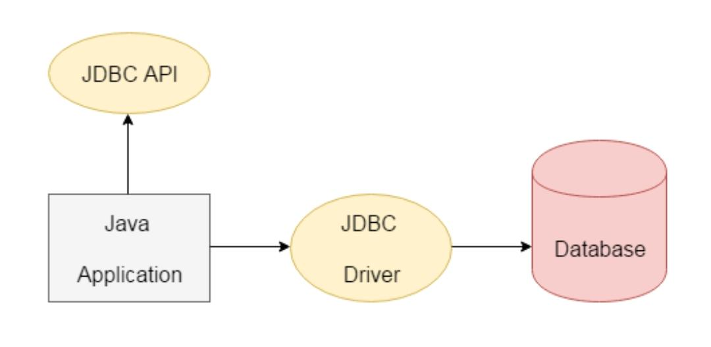

Java Database Connectivity is a Java API to connect and execute the query with the database. It is a part of JavaSE (Java Standard Edition).We can use JDBC API to access tabular data stored in any relational database.
To establish a JDBC connection these are the four steps:
1. Import JDBC Packages: Add import statements to your Java program to import required classes in your Java code.
2. Register JDBC Driver: This step causes the JVM to load the desired driver implementation into memory so it can fulfill your JDBC requests.
3. Database URL Formulation: This is to create a properly formatted address that points to the database to which you wish to connect.
4. Create Connection Object: Finally, code a call to the DriverManager object's getConnection( ) method to establish actual database connection.

Syntax:
Loading the driver: DriverManager.registerDriver(new oracle.jdbc.driver.OracleDriver())
To create connection: Connection con = DriverManager.getConnection(url,user,password)
Important points:
1. JDBC is an standard API specification developed in order to move data from frontend to backend.
2. This API consists of classes and interfaces written in Java.